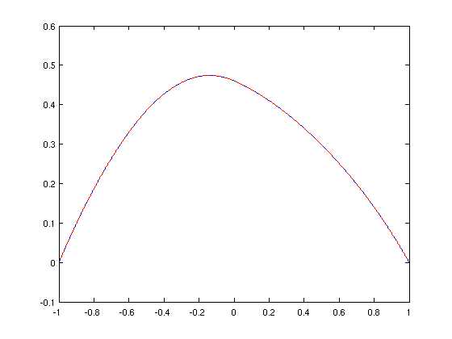
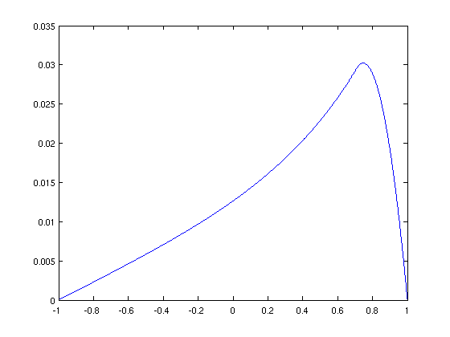

Piecewise Operators Demo
Nick Hale, 25th November 2011
Contents
(Chebfun Example ode/PiecewiseDemo.m)
Here we demonstrate piecewise differential operators (incl. boundary conditions), and how the systems constructor goes about solving them in Chebfun. This Example is intended for those wanting to learn more about what's going on under the cheb-hood, rather than those simply wanting to solve these kinds of problems. If you fall into this later category, there are more Examples of that kind in the ODE examples directory [1].
format short
Piecewise operator
Define a chebop with coefficient which jumps at x = 0.
A = chebop(@(x,u) -diff(u,2) + sign(x).*exp(x).*u)
A = chebop
Linear operator operating on chebfuns defined on:
interval [-1,1]
representing the operator:
@(x,u)-diff(u,2)+sign(x).*exp(x).*u
with n = 3 realization:
-4.3679 8.0000 -4.0000 0 0 0
-4.0000 7.3935 -4.0000 0 0 0
-4.0000 8.0000 -5.0000 0 0 0
0 0 0 -3.0000 8.0000 -4.0000
0 0 0 -4.0000 9.6487 -4.0000
0 0 0 -4.0000 8.0000 -1.2817
Although A doesn't know it has a discontinuous coefficient at zero, it will once we perform a linearity check (which is done internally when we solve a BVP).
A = linop(A)
A = linop
Linear operator operating on chebfuns defined on:
interval [-1,1] with breakpoint 0
with functional representation:
@(x,u)-diff(u,2)+sign(x).*exp(x).*u
with n = 3 realization:
-4.3679 8.0000 -4.0000 0 0 0
-4.0000 7.3935 -4.0000 0 0 0
-4.0000 8.0000 -5.0000 0 0 0
0 0 0 -3.0000 8.0000 -4.0000
0 0 0 -4.0000 9.6487 -4.0000
0 0 0 -4.0000 8.0000 -1.2817
and differential order 2
This would still be the case if A were nonlinear and we were linearising around a current iteration.
What does it look like when we evaluate these piecewise operators? Well without boundary conditions, with just have two independant blocks, which can be evaluated at different sizes (here only 4x4 for x in [-1 0] and 3x3 in [0 1], so that it fits on the screen!).
A([4 3],'nobc')
ans =
-21.7012 37.3333 -26.6667 10.6667 0 0 0
-13.3333 20.8610 -10.6667 2.6667 0 0 0
2.6667 -10.6667 20.5545 -13.3333 0 0 0
10.6667 -26.6667 37.3333 -22.3333 0 0 0
0 0 0 0 -3.0000 8.0000 -4.0000
0 0 0 0 -4.0000 9.6487 -4.0000
0 0 0 0 -4.0000 8.0000 -1.2817
By default, Chebfun will apply boundary conditions to enforce continuity of derivatives up to the differential order of the operator. This can be seen in the bottom two rows below.
A([4 3],'bc')
ans =
-16.7517 27.5806 -17.1866 5.9316 0 0 0
5.9624 -17.2289 27.3340 -16.9316 0 0 0
0 0 0 0 -4.0000 9.6487 -4.0000
0 0 0 -1.0000 1.0000 0 0
1.0000 -2.6667 8.0000 -6.3333 -3.0000 4.0000 -1.0000
However, we still need to apply some boundary conditions of our own to the operator. Let's choose dirichlet for simplicity.
B = A & 'dirichlet'; B([4 3],'bc')
ans =
-16.7517 27.5806 -17.1866 5.9316 0 0 0
5.9624 -17.2289 27.3340 -16.9316 0 0 0
0 0 0 0 -4.0000 9.6487 -4.0000
1.0000 0 0 0 0 0 0
0 0 0 0 0 0 1.0000
0 0 0 -1.0000 1.0000 0 0
1.0000 -2.6667 8.0000 -6.3333 -3.0000 4.0000 -1.0000
We'll need a RHS to solve for. Again, for simplicity let's choose the constant function 1. With the boundary conditions tagged on, for a given N this is then be given by
rhs = @(N) [ones(N-4,1) ; zeros(4,1)];
We're now almost in a position to start solving piecewise ODEs. However, the standard constructor doesn't do quite enough here, as when it constructs on a domain such as [-1 0 1], the 2 subdomains are treated independently. By wrapping the domain as a cell, we force the use of the systems constructor which doesn't suffer from this.
myfun = @(x,N,bks) B(N{:},'bc')\rhs(sum(N{:}));
u = chebfun(myfun,{[-1 0 1]},'eps',1e-10)
u =
chebfun column (2 smooth pieces)
interval length endpoint values
[ -1, 0] 11 -3.6e-14 0.46
[ 0, 1] 12 0.46 0
Total length = 23 vertical scale = 0.47
An alternative notation is
u = chebfun(myfun,[-1 0 1],'eps',1e-10,'sys',1);
Of course most users won't even see things at this level - they'll just be calling backslash!
v = B\1;
which we see does much the same as above.
plot(u,'b',v,'--r','LineWidth',1.6)
Piecewise RHS
Jumps and discontinuities can also be introduced by the RHS. For example, here's a smooth operator
A = chebop(@(x,u) -diff(u,2) + exp(x).*u);
x = chebfun('x');
A.bc = 0
A = chebop
Linear operator operating on chebfuns defined on:
interval [-1,1]
representing the operator:
@(x,u)-diff(u,2)+exp(x).*u
left boundary condition:
0
right boundary condition:
0
with n = 6 realization:
-32.4000 52.1555 -28.0615 14.3425 -10.2839 4.6444
0.5291 -5.5111 10.8089 -7.1747 3.4731 -1.4432
-1.3831 3.3662 -7.1105 11.4116 -5.2125 0.3945
4.6012 -10.2104 14.3064 -28.1337 53.2638 -31.3083
1.0000 0 0 0 0 0
0 0 0 0 0 1.0000
and a RHS with a jump at sqrt(2)/2
s = sqrt(2)/2; rhs = heaviside(x-s);
Again, when we solve the system, continuiuty of the solution and its first derivative are enforced across the discontinuity of the RHS at sqrt(2)/2.
v2 = A\rhs plot(v2)
v2 =
chebfun column (2 smooth pieces)
interval length endpoint values
[ -1, 0.71] 30 1.7e-13 0.029
[ 0.71, 1] 12 0.029 0
Total length = 42 vertical scale = 0.029
 References
[1] http://wwww.chebfun.org/examples/ode/
[2] http://wwww.chebfun.org/examples/ode/html/JumpConditions.shtml